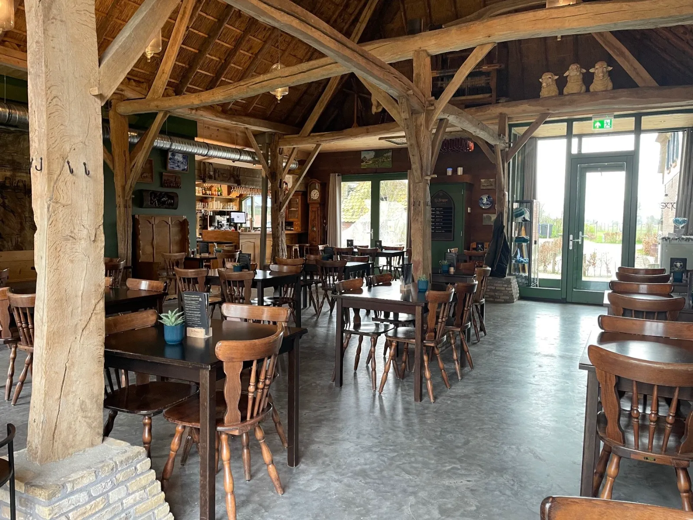
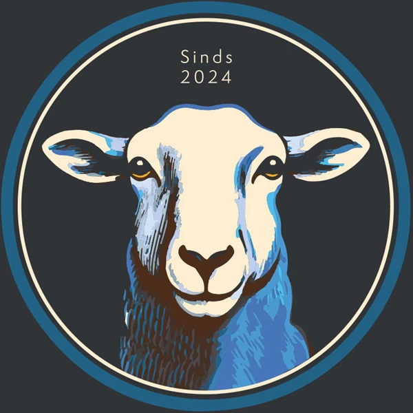
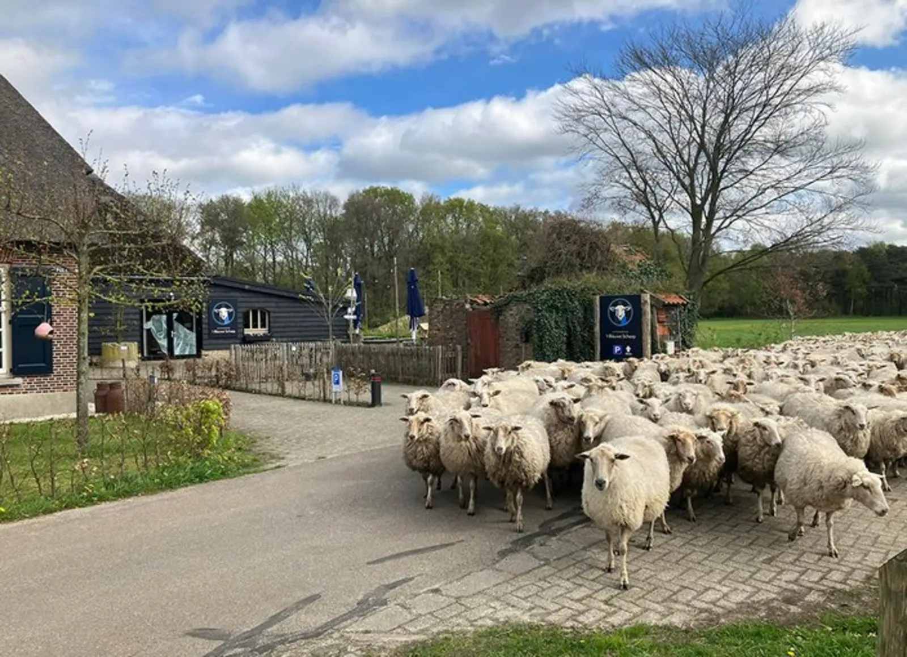
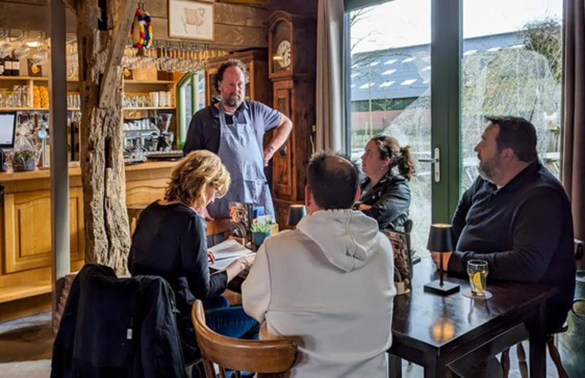
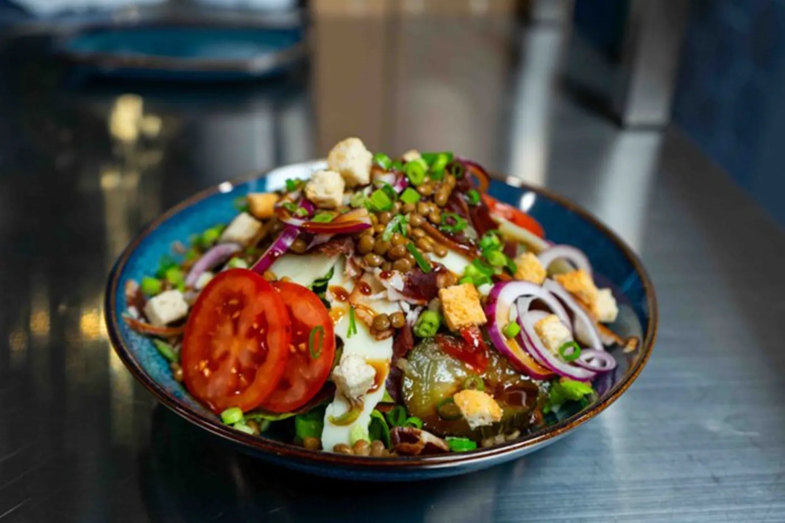
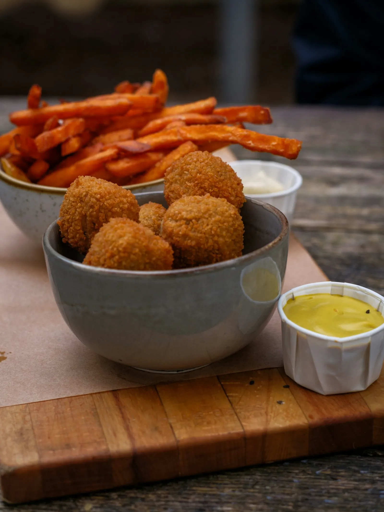
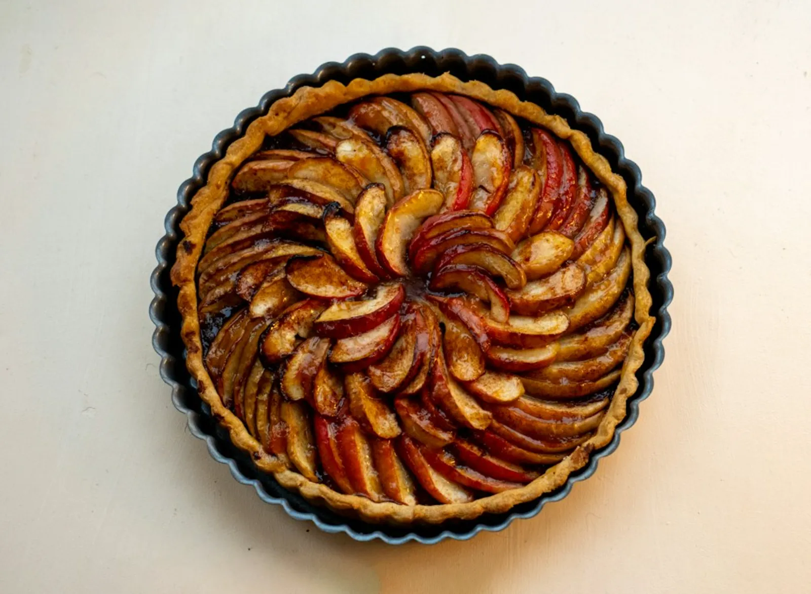
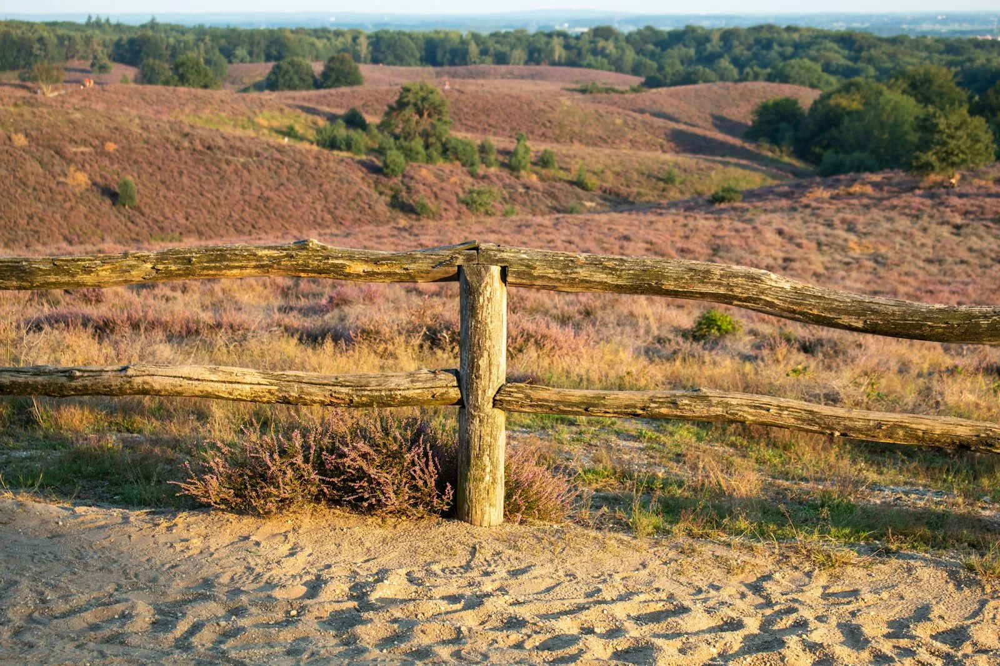
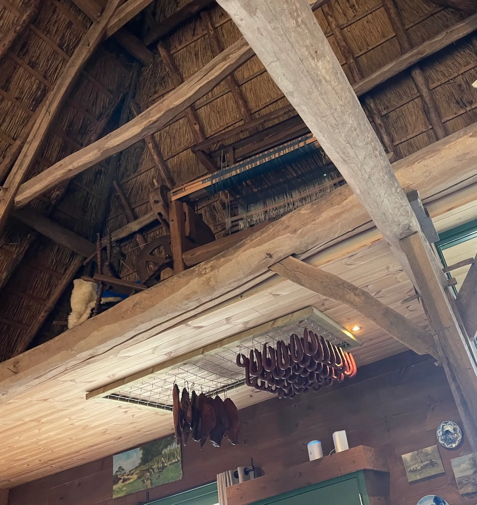

Uitspanning op de Pauwelshoeve, Loon op Zand
Genieten op z'n Brabants bij schaapherder Bart
Een bakske koffie met vers appelgebak, een ijsco, of een Trappistenbiertje met de lekkerste bitterballen uit de regio. In een oude schaapskooi, midden in Landschap Pauwels.


Keuken: di t/m do 10:00 tot 17:00, vr t/m zo 10:00 tot 19:00 Maandag gesloten. We sluiten als de kastelein het beu is.
06-42489765Brabantse gezelligheid, eerlijk en lokaal
Schuif aan voor een heerlijke lunch of avondeten, veelal gemaakt van eerlijke lokale ingrediënten. Van herdersham en schapenkaas tot de Heidebijter: veel komt van onze eigen schapen, die jarenlang in de natuur grazen.
't Blauwe Schaap staat op het erf van de Pauwelshoeve, de thuisbasis van de schaapskudde van schaapherder Bart van Ekkendonk. Kom en ontdek ook het sprookjesachtige ontstaan van 't Blauwe Schaap.
Lees het sprookje

Menukaart
V = vegetarisch, Vg = veganistisch mogelijk. Voor info over allergenen vraag één van onze medewerkers. Prijzen in euro.
Tosti's
- Schaapherder tosti8,90Herdersham, schapenkaas en Henriëttes tomatenketchup
- Duinen tosti8,90Rauwe ham, Duinkruidenkaas en Henriëttes tomatenketchup
- Kaas tosti V8,90Ferm & Rijp kaas van de Duinboeren en Henriëttes tomatenketchup
- Tosti Dennis12,903 dubbele tosti belegd met rauwe ham, Ferm en Rijp kaas, roerei en gekruid gehakt, geserveerd met huisgemaakte tostisaus
- Tosti spinazie / pesto V11,903 dubbele tosti met spinazie, pesto, gebakken champignons en Duinkruidenkaas, geserveerd met huisgemaakte tostisaus
Soepen
- Henriëttes tomatensoep V Vg7,00Verse tomaten met room en croutons
- Brabantse uiensoep V Vg7,90Uiensoep gegratineerd
Salades
- Schaapherder salade14,90Herdersham, schapenkaas, tomaat, komkommer, rode ui, croutons en dadel/balsamico topping
Brood
- Gezond schaap op brood13,90Herdersham, schapenkaas, sla, tomaat, rode ui en dadel/balsamico topping
- 2 Herderskroketten met brood12,90Van onze eigen schapen die jarenlang in de natuur grazen
- 2 Rundvleeskroketten met brood12,90Met Duinvlees
- 2 Kaaskroketten met brood V12,90Met kaas van Duinzuivel van de Duinboeren
- 2 Oesterzwamkroketten met brood V Vg12,90Van ZuiderZwam uit Tilburg
- Uitsmijter 't Blauwe Schaap14,90Twee eieren, twee sneden brood, herdersham, schapenkaas en salade
- Uitsmijter Duinen14,90Twee eieren, twee sneden brood, rauwe ham, Duinkruidenkaas en salade
- Heidesmijter15,90Uitsmijter met drie eieren, twee sneden brood, Ferm & Rijp kaas, Heidebijter en salade
- Portie friet mayo4,00
- Worstenbrood3,90Met rundvlees van Duinvlees
- Brood met smeersels8,90
Worden geserveerd met friet en salade.
Burgers
- 't Blauwe Schaap burger19,90Herdersburger met sla, tomaat, rode ui en huisgemaakte tzatzikisaus
- Duinvlees burger21,90Burger van Duinvlees uit Biezenmortel met sla, tomaat, rode ui, gegratineerd met kaas, gebakken ei en huisgemaakte burgersaus
- Beyond burger V Vg20,90Vegetarische burger met sla, tomaat, komkommer, gegratineerd met kaas, gebakken ei en huisgemaakte burgersaus
Schnitzels van 'Ons Erf' in Udenhout
- Schnitzel21,90Pepersaus, champignonsaus of tomaat
- Schnitzel pinda22,90Pindasaus, gebakken uitjes, atjar en kroepoek
- Schnitzel 't Blauwe Schaap24,90Champignons, Heidebijter, ui en Duinkruidenkaas
Van het erf en de regio
- Spareribs van 'Ons Erf' in Udenhout24,90Huis gemarineerd, met knoflooksaus
- Kipsaté van Van Berkel uit Kaatsheuvel18,90Pindasaus, atjar, gebakken uitjes en kroepoek
- Fish and chips18,90Scholfilet uit de Noordzee, gepaneerd, met huisgemaakte remouladesaus
- Köfte van 't Blauwe Schaap18,90Herdersgehakt met platbrood, tzatziki, Henriëttes tomatenchutney en salade
- Rundvleesstoofpotje van boer Jan18,90Met Duinvlees uit Biezenmortel

De lekkerste lokale bitterballen.
Bitterballen 6 / 8 stuks
- Herders bitterbal8,90 / 11,90Van onze eigen schapen
- Rundvlees bitterbal8,90 / 11,90Duinvlees
- Kaas bitterbal V8,90 / 11,90Kaas van Duinzuivel
- Oesterzwam bitterbal V Vg8,90 / 11,90ZuiderZwam uit Tilburg
Plankjes
- Kaas plankje8,903 kazen van Duinzuivel: Brabantse Schone, Duinkruiden, Ferm en Rijp
- Heidebijter8,90Droge worst van onze eigen schapen
Nacho's
- Nacho's naturel V8,90Kaas en crème fraiche
- Nacho's Mexicaans14,90Gehakt van Duinvlees, champignons, paprika, rode ui, jalapeño peper, kaas, crème fraiche en guacamole
- Nacho's 't Blauwe Schaap14,90Herdersgehakt, schapenkaas, champignons, paprika en rode ui, met Henriëttes tomatenchutney

IJs
- Diverse soorten ijs, per bakje3,90Biologisch ijs van IJshoeve Uijlenborch in Udenhout: boerenroom, aardbei, blauwe bes, witte chocolade, citroen sorbet
- Portie slagroom0,70
- Coupe advocaat7,90Boerenroomijs van Uijlenborch uit Udenhout, advocaatje van de Annahoeve in de Moer en slagroom
Gebak
- Appelgebak4,90Van Mevrouw de Bakker uit Oisterwijk
- Appelgebak met slagroom5,60
- Appelgebak met roomijs en slagroom7,60
- Progres gebak4,90

Kindergerechten
- Tomatensoepje V Vg4,50
- Poffertjes V6,00
- Frietje met knakworst6,50
- Frietje met 3 bitterballen7,50
- Kinder tosti7,00Kaas, tomatenketchup
Voor bij de limonade
- Ranja, glas1,50
- Ranja, kan6,00
- Chocomel3,50
- Fristi3,50
Koffie & thee
- Koffie3,30
- Espresso3,30
- Dubbele espresso4,50
- Cappuccino3,90
- Latte macchiato3,90
- Thee3,30Diverse smaken van Local Tea uit Zundert
- Verse munthee met honing3,90
- Verse melk3,00Van boer Guus
- Warme chocomel3,90
- Warme chocomel met slagroom4,60
Met een scheutje
- Schrobbèler espresso7,50
- Loonse koffie7,50Klutske, Loonse kruidenbitter en opgeschuimde melk
- French Coffee8,90Grand-Marnier, slagroom
- Italian Coffee8,90Disaronno, slagroom
- Irish Coffee8,90Irish whiskey, slagroom
- Schrobbèler choco met slagroom7,90
- Warme chocomel met rum en slagroom7,90
Frisdranken
- Coca cola3,30
- Coca cola zero3,30
- Sinas3,30
- Cassis3,30
- Sprite3,30
- Fuze tea sparkling3,50
- Fuze tea green3,50
- Bitter lemon3,50
- Tonic3,50
- Rivella3,50
- Ginger Ale3,50
- Appelsap3,50
- Sinaasappelsap3,30
- Chaudfontaine blauw3,30
- Chaudfontaine rood3,30
- Chocomel3,50
- Fristi3,50
- Ranja, glas1,50
- Ranja, kan6,00
Bier van de tap
- Bavaria pils 0,25 l3,30
- Bavaria pils 0,50 l6,30
- Seizoensbier van de tapvraag ernaar
Bier op fles
- De Scheper van 't Blauwe Schaap5,90
- La Trappe Witte Trappist5,50
- La Trappe Blond5,50
- La Trappe Dubbel5,50
- La Trappe Tripel5,50
- La Trappe Quadrupel5,90
- La Trappe Isid'or5,90
- IPA De Molen5,90
- Weihenstephaner Hefeweissbier 0,50 l6,90
- Bende van de Witte Veer Zwarte Johannes5,50
- Bende van de Witte Veer Schele Griet5,50
- Rodenbach Fruitesse5,50
- Bavaria Radler 2.03,90
- Bavaria Radler 0.03,70
- Bavaria 0.03,70
- La Trappe Nillis 0.05,50
- La Trappe Epos 0.05,50
Verfrissend
- Schrobbèler met ijs4,90
- Schrobbèler ginger cocktail7,50
- Geklutske tonic7,50
Wijn 4,90 per glas
- Wit droog: Chardonnay of Sauvignon Blanc4,90
- Wit zoet4,90
- Rood: Merlot of Cabernet Sauvignon4,90
- Rosé4,90
- Port Ruby of Port Tawny4,90
Sterke dranken
- Schrobbèler3,50
- Ùn Klutske3,50Loons kruidenbitter
- Jägermeister3,50
- Jonge jenever3,50
- Oude jenever3,50
- Witte rum3,50
- Vieux3,40
- Limoncello4,90
- Whiskey4,90
- Advocaat met slagroom5,50Advocaatje van de Annahoeve in de Moer
- Diverse likeuren5,90
Natuurlijk lokaal
Wat op je bord komt, komt zo veel mogelijk uit de buurt. Dit zijn de boeren, bakkers en makers achter onze kaart, met hun nummer op onze herkomstkaart.
- Eigen schapen Schapenvlees van eigen schapen die jarenlang de natuur in de wijde omgeving begrazen, onder andere De Loonse en Drunense Duinen.
- Duinvlees, Biezenmortel Runderen van boer Jan van de Zandkant in de Loonse en Drunense Duinen. Jan maakt ook zelf stoofvlees.
- Ons Erf, Udenhout Varken van Streekwinkel en Zorgboerderij Ons Erf.
- Van Berkel, Loon op Zand / Kaatsheuvel Kip.
- Slagerij Timmermans, Helvoirt Via deze lokale slagerij komt het vlees terug bij de boeren die het op hun boerderijen verkopen.
- Duinzuivel Koemelkkazen, een Duingoed-product van De Duinboeren.
- Mijn Melk, Udenhout Biologische melk, yoghurt en ijskoffie van Guus van Roesel.
- TerraVie, Loon op Zand Verwerkt schapenvlees, rundvlees en kaas van Duinzuivel in bitterballen en kroketten.
- ZuiderZwam, Tilburg Oesterzwamkroketten en -bitterballen.
- Natuurlijk Henriëtte, Klein Dongen Biologische verse sla, groenten, tomatensoep, tomatenchutney, tomatenketchup, eitjes en komkommer.
- Mevrouw de Bakker, Oisterwijk / Biezenmortel Appelgebak.
- Bakkerij Leo Geerts Geerste Bies en brood, uit de winkels rond De Loonse en Drunense Duinen.
- IJshoeve Uijlenborch, Udenhout Biologisch ijs.
En verder: thee van Local Tea uit Zundert en honing van Imkerij Op 't Sandt uit Loon op Zand.
Tekst © 2024 Bart van Ekkendonk. Hier kort naverteld.
Het sprookje van 't Blauwe Schaap
Op de Loonse en Drunense Duinen hoedde schaapherder Bartholomeus zijn kudde, samen met herdershond Job. Eén schaap, Oona, dwaalde af.
Oona viel in de blauwloop: water dat blauw kleurde door de Tilburgse textielfabrieken, de stroom die nu de Zandleij heet. Toen ze eruit klom, bleef ze blauw. Zo werd ze 't Blauwe Schaap.
Mensen kwamen naar de Pauwelshoeve om het blauwe schaap te zien, en de oude schaapskooi werd Uitspanning 't Blauwe Schaap.
Maar de Bende van de Witte Veer, de rovers Zwarte Johannes en Schéle Griet, wilde Oona stelen. De hoofdcommissaris pakte ze op, en ze werden opgesloten in het Witte Kasteel in Loon op Zand.
De legende en andere verhalen over De Loonse en Drunense Duinen worden verteld bij het haardvuur in de uitspanning. Daar waar herinneringen worden gekoesterd en avonturen nooit eindigen.
Proef het verhaal: Zwarte Johannes en Schele Griet staan als bier op onze kaart.

Een pauze op je route
De omgeving van 't Blauwe Schaap is bijzonder geschikt voor een fiets- of wandelroute. Kom aan voor koffie met gebak, lunch, diner of een borrel, en vervolg je route weer door.
Vanuit Tilburg Noord, Berkel-Enschot, Udenhout en Loon op Zand ben je er via een korte route. De MTB-route van de Loonse en Drunense Duinen ligt op 5 à 10 minuten fietsen.
Routes langs 't Blauwe Schaap
- Tilburg Noord naar Noorderbos & Noorderplas9,9 km
- Rondje Berkel-Enschot en Landschapspark Pauwels15,2 km
- Rondje Udenhout, Zandleij en de Brand12,2 km
- Rondje Loon op Zand met koffiestop6,3 km
Natuurlijk genieten
Midden in Landschap Pauwels staat de Pauwelshoeve, bij De Loonse en Drunense Duinen, Landgoed Huis ter Heide en De Brand. Je loopt zo het Noorderbos in. De Efteling en Safaripark Beekse Bergen liggen op een steenworp; in Tilburg zijn het Textielmuseum, De Pont en Natuur Museum Brabant.
MTB-routes in de buurt: Loonse en Drunense Duinen, Stadsbos013, MTB Dorst en MTB Alphen. Breng ook een bezoek aan een van de Duinboeren, waar veel van onze producten te vinden zijn.
De schaapskudde
De Pauwelshoeve is de thuisbasis van de schaapskuddes. In het begrazingsseizoen werken ze in diverse natuurgebieden aan landschapsbeheer, en elke dag loopt er een herder met kudde in de Loonse en Drunense Duinen. Eens per jaar komen ze terug op het erf, in de lammerperiode in het voorjaar.

Reserveren
Tot 48 uur van tevoren kunt u het formulier invullen; u ontvangt binnen 24 uur een bevestiging per e-mail. Binnen 48 uur? Bel ons op 06-42489765. Met een groep van meer dan 10 personen belt u ons ook even, dan spreken we uw wensen door en reserveren we een plek voor uw groep.
Feesten en partijen
Buiten openingstijden is het mogelijk om uw feest of partij bij ons in 't Blauwe Schaap te vieren. Vul het formulier in met uw wensen en wij nemen contact met u op.
Cadeaubon
Iemand verwennen met een Brabants middagje? 't Blauwe Schaap heeft een cadeaubon. Vraag ernaar via info@blauweschaap.nl of 06-42489765.
Kom langs
Moleneind 29
5175 NZ Loon op Zand
Op het erf van de Pauwelshoeve, Landschap Pauwels.
06-42489765
info@blauweschaap.nl
Openingstijden keuken
| Maandag | gesloten |
|---|---|
| Dinsdag | 10:00 tot 17:00 |
| Woensdag | 10:00 tot 17:00 |
| Donderdag | 10:00 tot 17:00 |
| Vrijdag | 10:00 tot 19:00 |
| Zaterdag | 10:00 tot 19:00 |
| Zondag | 10:00 tot 19:00 |
We sluiten als de kastelein het beu is. Dit kan vroeg of laat zijn.